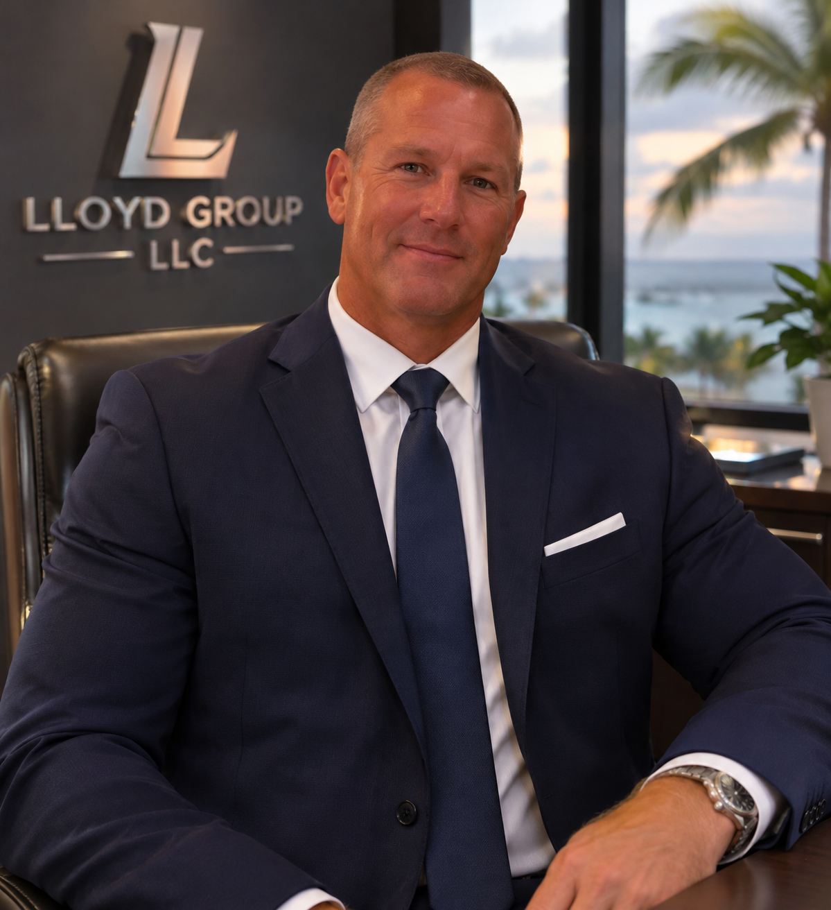

Digital experiences
Professional websites, landing pages and digital storefronts that make your business easier to understand and engage with.
Connect the ideas, systems and digital experiences that move your business forward.
Practical ideas.
Thoughtful execution.
Technology should solve a real problem. We begin with what you want to achieve, then shape a focused project around the tools, content and connections that matter.
Professional websites, landing pages and digital storefronts that make your business easier to understand and engage with.
Identify repetitive work, explore useful automations and plan how AI can support the way your business operates.
AI-assisted promotional content and short-form property videos, created around authorized assets and reviewed before use.
A thoughtful process keeps the work connected to your goals—from the first conversation to the final handoff.
Start with your business, your audience and the obstacles getting in the way.
Agree on a focused scope, priorities and what a useful outcome looks like.
Bring the experience together, review the details and refine what matters.
Review the finished work and understand how to use and maintain it.

Lloyd Group LLC is a veteran-owned business led by Brian Lloyd. We bring a practical, hands-on perspective to the intersection of technology, business and digital communication.
Our focus is straightforward: understand the need, ask better questions and make the next step useful. Every project begins with an honest conversation about its scope and fit.
Contact Our CEO — blloyd@lloydgrp.com
Meet your next project with clarity →A new website. A repetitive task. A product story.
Let’s find the right starting point.
Tell us a little about your project, what you need and where you’d like to go.
blloyd@lloydgrp.com →For general inquiries and project support.